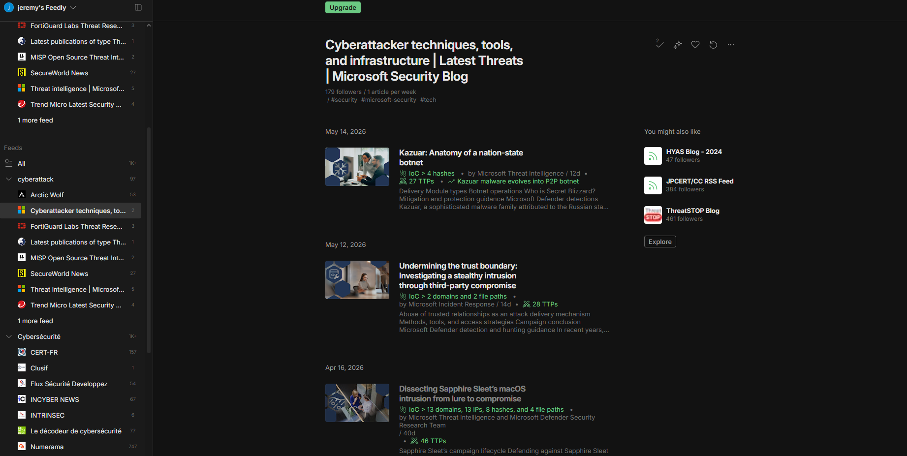
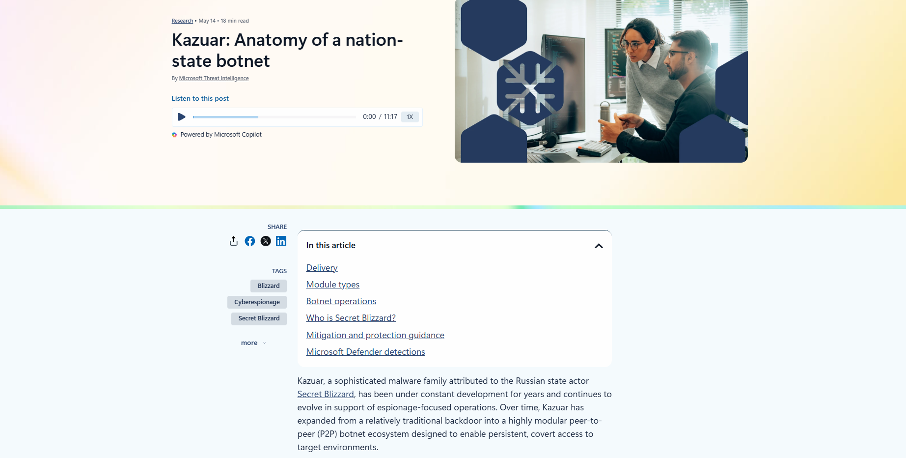
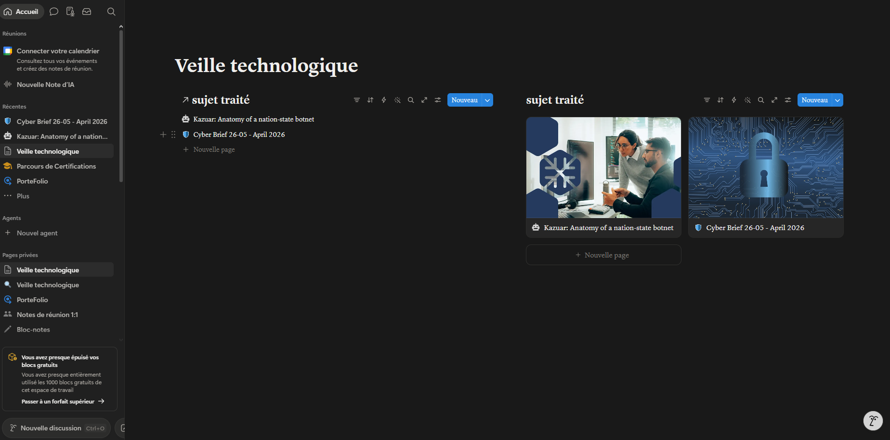

Veille Technologique
Pourquoi faire de la veille technologique ?
Les cyberattaques de grande envergure
J'ai choisi de travailler sur les cyberattaques de grande envergure parce que c'est un enjeu majeur qui affecte les organisations, les gouvernements et les particuliers. Ces attaques évoluent constamment et il est crucial de suivre les menaces émergentes pour comprendre les risques actuels et futurs. Ce sujet permet aussi de s'intéresser aux stratégies de défense, aux vulnérabilités des systèmes, et aux impacts des cyberincidents sur la sécurité des données et la continuité des services.
Pour suivre ma veille technologique, j'utilise ces ressources :


